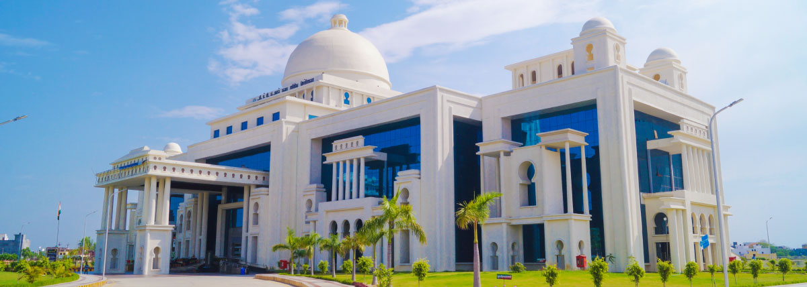

Dr. A.P.J. Abdul Kalam Technical University (AKTU), before
2015 as the Uttar Pradesh Technical University (UPTU), is a
public collegiate university in Lucknow, Uttar Pradesh, India. It
was established as the Uttar Pradesh Technical University through
the Government of Uttar Pradesh on 8 May 2000. To reduce
workload and to ensure proper management, the university was
bifurcated into separate universities, Gautam Buddh Technical
University (GBTU) and Mahamaya Technical University (MTU),
with effect from 1 May 2010.[2]
In 2013, as a new government
came into power, the university was formed again by combining
the two on 5 January 2013.[3]
It is an affiliating university, with approximately 800 colleges
affiliated to it.
[4] The university was earlier on the IET Lucknow
campus. Now it is in its newly inaugurated campus in Jankipuram,
Lucknow. Additionally, the university had a Centre and Regional
Office in Noida, Uttar Pradesh.

History
Dr. A.P.J. Abdul Kalam Technical University, Lucknow formerly Uttar Pradesh Technical University
(UPTU), was established by the government of Uttar Pradesh on 8 May 2000 (Act No. 1248 (2)XVII-V-II-19-2000 Uttar Pradesh Adhiniyam Sankhya 23 of 2000). Under the University Act, 'Technical Education'
includes programmes of education, research, and training in engineering, technology, architecture, town
planning, pharmacy, applied arts and crafts, and such other programmes and areas that the central
government may declare by notification in the Gazette in consultation with All India Council for Technical
Education (AICTE).
The university was bifurcated into the Mahamaya Technical University and Gautam Buddha Technical
University as of 1 May 2010 for better management of education in the state. On 1 May 2013, the Uttar
Pradesh government decided to merge GBTU and MTU to bring back the original form of UPTU. On 31
October 2013, GBTU and MTU merged back to UPTU, the university with the maximum number of
colleges affiliated to it, in India.
[2] On 18 September 2015, the university was officially renamed as Dr.
A.P.J. Abdul Kalam Technical University.
[5]
Vinay Kumar Pathak was appointed VC in August 2015[6] and reappointed for an additional three years in
2018.[7] When his tenure ended in August 2021, Vineet Kansal was appointed VC as an additional charge.
Kansal was replaced by Pradeep Kumar Mishra in January 2022.
Overview
The university is affiliating in nature and its jurisdiction spanned the state of Uttar Pradesh. It is one of the
largest technical universities in India and perhaps in Asia. Because of its size, the number of colleges
affiliated with it, and geographic dispersion, it is sub-divided into five zones with 45–50 colleges in each
zone for the ease of management and facilitating inter-zonal comparison and possible internal competition
to enhance the quality of teaching-learning processes.
The university envisioned to facilitate and nurture quality technical education and research in its own
premises as well as all affiliated institutions. There were 49 affiliated colleges in 2000, now in August 2019,
785 colleges and institutions. The task of the university included conducting the SEE-UPTU for admission
to programs affiliated with it. The university conducted central examinations each semester for all the
affiliated colleges and institutions. Results were declared using technology-enabled systems. At present, in
August 2019 around 4,00,000 students are enrolled in its programmes. The medium of instruction and
examination is English.
As per a dipstick study conducted by MeritTrac in association with UPTU Watch magazine (2011), the
engineering talent pool of the university was found to be significantly better than the national average.
Nehru National Institute of Technology (2000 to 2002)
Madan Mohan Malaviya University of Technology (2000 to 2013)
Harcourt Butler Technical University (2000 to 2016)
College of Engineering and Technology (2010 to 2014)
College Saifai (2015 to 2016)
Courses Offered
The university offers undergraduate courses in engineering, architecture, hotel management and catering
technology, fashion and apparel design, and pharmacy. These lead to degrees of B.Tech, B.Arch, BHMCT,
BFAD, and B.Pharma respectively. The university offers postgraduate courses in computer applications
and business administration leading to degrees of MCA, MBA and MBA (Rural Development).
[11]
The university received its lowest number of applications in 2016, lowest in past 5 years.
[12] The university
offers training and placement support to affiliated colleges and institutes through the University industry
interface cell(UIIC). The top colleges affiliated [13]
to Dr. A.P.J. Abdul Kalam Technical University have
been providing excellent placement record over the years.
Notable Alumni
List of notable people who studied at Dr. A.P.J. Abdul Kalam Technical University, Lucknow.
Government and Politics
Trivedi, MP
Praveen Kumar Nishad, MP
Yasar Shah, former MLA
Abdullah Azam Khan, MLA
Swati Maliwal, chairperson of Delhi Commission for Women